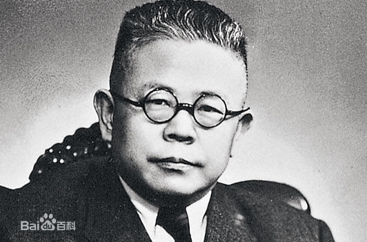

傅斯年论中医
中国现在最可耻、最可恨、最可使人断气的事……是所谓西医，中医之争。
……日本的侵略不得了，如我们有决心，有准备，加以极大之努力，而且善于利用局势，日本总有受教训之一日。只有中医、西医之争，真把中国人的劣根性暴露得无所不至！以开了四十年学校的结果，中医还成问题！受了新式教育的人，还在那里听中医的五行、六气等等胡说！自命为提倡近代化的人，还在那里以政治的或社会的力量作中医的护法者！这岂不是明显表示中国人的脑筋仿佛根本有问题？
对于自己的身体与性命，还没有明了的见解与信心，何况其他。对于关系国民生命的大问题还在那里妄逞意气，不分是非，何况其他。对于极容易分辨的科学常识还在馄饨的状态中，何况较繁复的事。到今天还在那里争着中医、西医，岂不使全世界人觉得中国人另是人类之一种！办了四十年学校不能脱离这个中世纪的阶段，岂不使人觉得教育的前途仍是枉然！
中国人到了现在还信所谓中医者，大致有几个原因。最可恕的是爱国心，可惜用的地方大错了。人们每每重视本地或本国对于一种学问或艺术之贡献，这本是一件普通的事，而且在略有节制的范围内，也是一件好事。因为这样才可以激励出其土、其国更多的贡献来。不过所谓中医并非纯粹的汉土产品，这类的方技在唐时颇受印度及中亚的影响，在宋、元更受阿拉伯人的影响。中医本来即无病理，又缺诊断，无非是一部“经验良方”。
这些经验良方不是一处来的。这类考据，此地无法谈，我只提醒一句，其实医学在现在并无所谓国界，虽德国、法国、英国、美国的风气各有小小不同，在基础上全无半点分别，这不是论诗宗、评画派一流的事。第二个原因是头脑不清楚。对于一切东西皆不深信，也皆不信，人云亦云，生病请医生全是试试看，恰如乡下老太婆生了病时拜一切神佛一般。这全是以做梦的状态对付死生的大事。第三个原因是教育不好的结果。中国的教育中没有给人安置一个坚实的科学常识训练，故受此教育者后来糊涂如此。
我以为目下政府及社会上人应该积极注意此事。想法子不再为所谓“国医”丢国家民族的丑了。即如数月前设置所谓中医研究所之争，真是一件意气与无知之充分表演，不图今日见此11世纪的恶剧。又如近时几个监察委员弹劾中央医院的事，真正是件大笑话，中央医院究竟杀人不杀人，须待有资格的医士检定，岂是几个在事外监察委员所能凭空断定的。以非技术的国家官吏去判断纯粹技术的问题，监察员坐在家中做了监察吏，这要比《洗冤录》所代表的文化还要退下几步。
以政治的立点论，中国此时医学卫生的状态有下列几件事急须要做。
第一，应该多设几个训练在内地服务医生之学校。目下的有名医学校，国立的如上海医学院，私立的如北平协和医学校，所造出的医生很能适合近代医学所要求的高标准，但听说他们每每喜欢在大埠作业，到内地去是很少的。所以内地至今等于没有真的医生，只靠几个教会的医院对付。这是不应该而且不了的事。至于各省设的医学校每每不能甚好，专靠他们也不是办法。现在应该集中力量，或就已有好的医学校中设农村服务医生一科，使他们在毕业后到内地，或者简单到内地乡村里办医学校去。听说南京中央医院有此类之计划，我希望它早能实现。
第二，内地之需要公共卫生比需要医士还迫切。医士之训练不能速成，一时断难普及，不如先尽量讲究公共卫生，收效较快。况且中国是个世界上病菌最多的国家，各种疾疫并世无双，故死亡率在一切开化与未开化的人类之上。对付此情形之最有效方法，无过于防范于未病之先。以南京论，原来到了夏季、秋季伤寒、霍乱、疟疾之多，是大可使人吃惊的。几年以来，以卫生署及其附属机关之努力，特别是防疫注射之努力，这些病减少得多了。这样工作，比在南京多设几个医院的效力还重要。
终在中国的目下经济情形论，若干公共卫生的事业是难做的，然也不是一无可做的，其中也有若干不费钱只费力的。这里头的缓急与程序，要靠研究公共卫生的人的聪明，绝不是在中国乡村中无可为者。这件事要办好了，中国要少死许多人，即是省略了很大的国民经济之虚费。
第三，要多多的训练些内地服务之看护。中国人太忽略看护对于疾病之重要了，以为万般的病都只要靠药治，因此死人不少。内地人之无看护知识，因而更需要能服务的看护，本是不待说的。不特有训练的看护应该更多，即一般的看护知识也应该灌输在国民教育之中。
第四，更多用的医药品应该由政府自己设厂制造，或促成中国工业家之制造。如吸水棉、纱带、酒精，果一切仰给于国外，在国民经济上看来大不是了局。医药品是最不能不用的洋货，若因医药事业之进步，这个贸易的漏洞太大了，决不是办法，所以政府及社会应该及早准备。
第五，政府应该充分的推广生产节制。中国人口问题中的大毛病，第一是多产，第二是多死，这中间含有无数的浪费。果以医学卫生事业之进步，死亡率减少了，而生产率不减少，又不得了，所以生产节制大与社会安定有关。不过目下实行生产节制者，多为充分受教育之新家庭，此一个比较的能生长并能教育子女的社会阶级偏偏节制生产，而无力多生偏要滥生者不受限制，岂非渐渐的使我们的人种退化？所以政府应该对于一切患有花柳病、遗传性的精神病之人，及有遗传性的犯罪者，及绝不能自立者，利用最新发明的方法，使之不生育。近代国家的责任一天比一天大，作这样事若能做得妥当，不算是妄举。第六，政府应大量的奖励在中国的近代医学，此意待下次详说。
至于对付中医，似应取得逐步废止之政策。内地目下尚无医生，大埠的医生也不够用，而愚民之信此如信占卜相面看风水一半，禁止之后使他手足无所措。或者免不了暂且保留此一个催眠术。同时却也不能不管理他。若干真正胡闹的事，不便使他再做了。以后因有训练医生人数之增加，逐步禁止这些“国医”。目下可以先把大埠的“国医”禁止了，至少加一个重税于那些大赚钱的国医以取“寓禁于征”之作用。管理他们的衙门，当然是内政部礼俗司，而不该是卫生署，因为“医卜星相”照中国的“国粹”是在一块的。论到“国药”之研究，乃全是训练有学问的近代药学专家的事，一药之分析，及其病状效能之实验，决不是这些不解化学的“国医”所能知觉的。
我是宁死不请教中医的，因为我觉得若不如此便对不住我所受的教育。盼望一切不甘居混沌的人，有是非之心的人，在这个地方不取模棱的态度。
作者：傅斯年。
原载1934年3月5日《大公报》星期论文，又载1934年8月26日《独立评论》第一一五号